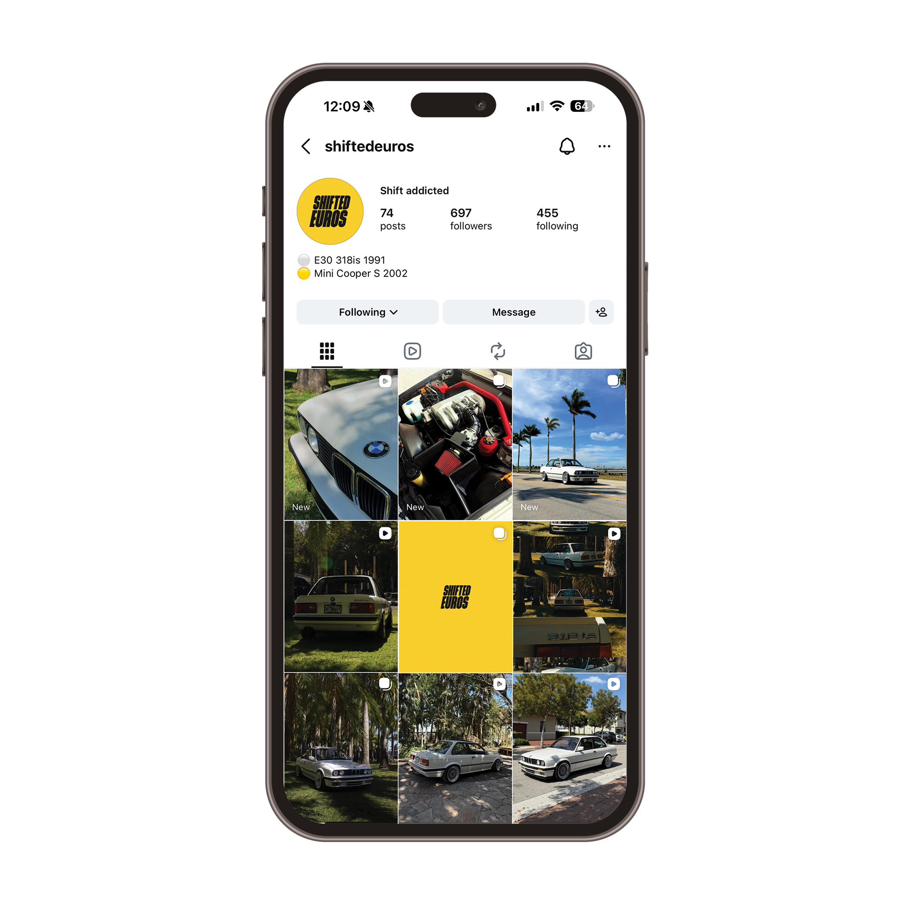
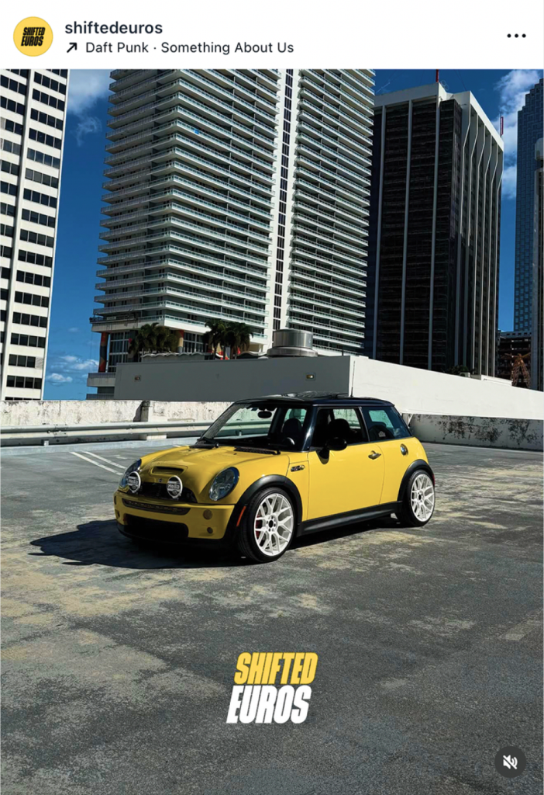

our challenge
Create a brand identity that captures the spirit of European car tuning culture, emphasizing the raw driving experience of manual transmission vehicles while maintaining a clean, modern aesthetic. The identity needed to feel dynamic, recognizable, and authentic to automotive enthusiasts.


Thanks for taking the time to view this project.
Explore more at yerays.com
shifted euros | 2026